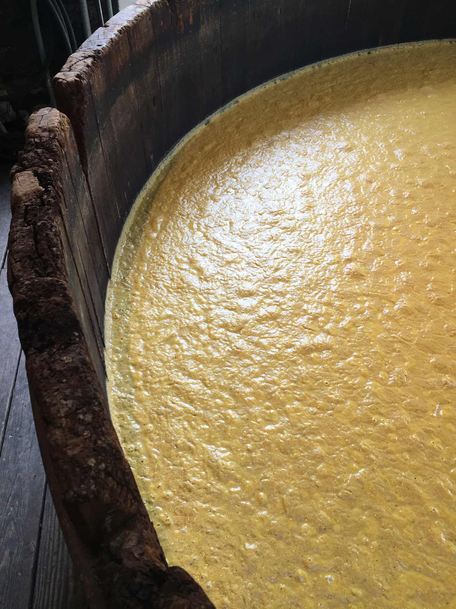
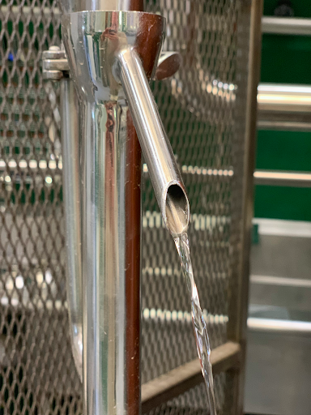

How It's Made
Distillation
The art of distilling transforms grains into spirit.
When whiskey comes off the still, this “new make” spirit is the color of water. Fitting since the word whiskey is derived from water of life in old gaelic. The vapors from the boiling still were considered “spirits” by the Middle Eastern alchemists that invented the craft for making perfumes and medicines millennia ago. This “new make” whiskey is what Split Spirits uses for the foundation of each single-origin spirit.
Whiskey starts its life as beer. Grains are ground up and mixed with hot water to convert the starch into simpler sugars. Then yeast is added and, over the course of a few days, eat the sugars and convert them into alcohol and CO2. This “distillers beer” is then heated in a still where the alcohol is separated from the water due to its lower boiling point. These alcoholic vapors rise up the still then condense when they hit the cooler copper tubes.
 The true art of distilling is in the cuts. The first alcohols that come off a still are actually toxic (think methanol and acetone). These are the foreshots and are used for cleaning or discarded. As the temperature in the still increases, the “heads” come next. Heads can still be mixed with trace amounts of undesirable alcohols so are separated and re-distilled. Then come the “hearts,” which is where the cleanest, best-tasting ethanol is collected. The tighter the hearts cut, the better the quality. We source grain spirit from the center of the hearts cut. Finally, the “tails” contain heavier alcohols and fats that are generally excluded to prevent off-flavors.
Split Spirits sources “new make” made from grains adapted to each place and distilled with expert precision to give you a delicious and truly local experience.